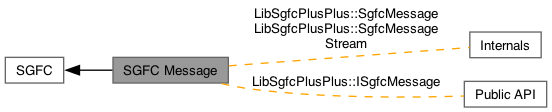

- Generated by
 1.16.1
1.16.1
|
libsgfc++ 3.0.0
A C++ library that uses SGFC to read and write SGF (Smart Game Format) data.
|
The SGFC Message module contains classes that are concerned with the messages generated by SGFC. More...

Classes | |
| class | LibSgfcPlusPlus::ISgfcMessage |
| The ISgfcMessage interface represents a message that is generated when SGF data is loaded and parsed, or when SGF data is saved. Most messages are generated by SGFC, but there are a few error cases where libsgfc++ also generates messages. ISgfcMessage objects are immutable. More... | |
| class | LibSgfcPlusPlus::SgfcMessage |
| The SgfcMessage class provides an implementation of the ISgfcMessage interface. See the interface header file for documentation. More... | |
| class | LibSgfcPlusPlus::SgfcMessageStream |
| The SgfcMessageStream class captures the stream of messages that is generated by SGFC. More... | |
The SGFC Message module contains classes that are concerned with the messages generated by SGFC.